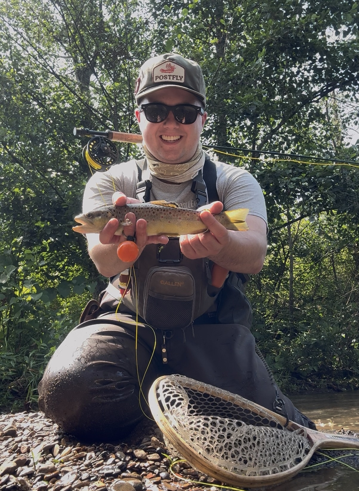

I created Western PA on the Fly to share my interest in fly fishing and my experiences fishing throughout Western Pennsylvania.

Why I Enjoy Fly Fishing
I enjoy learning about trout, aquatic insects, fly patterns, fishing techniques, and the different conditions that can affect a day on the water.
About the Project
This website will continue to grow throughout the semester as I learn more about HTML, CSS, JavaScript, and web development.